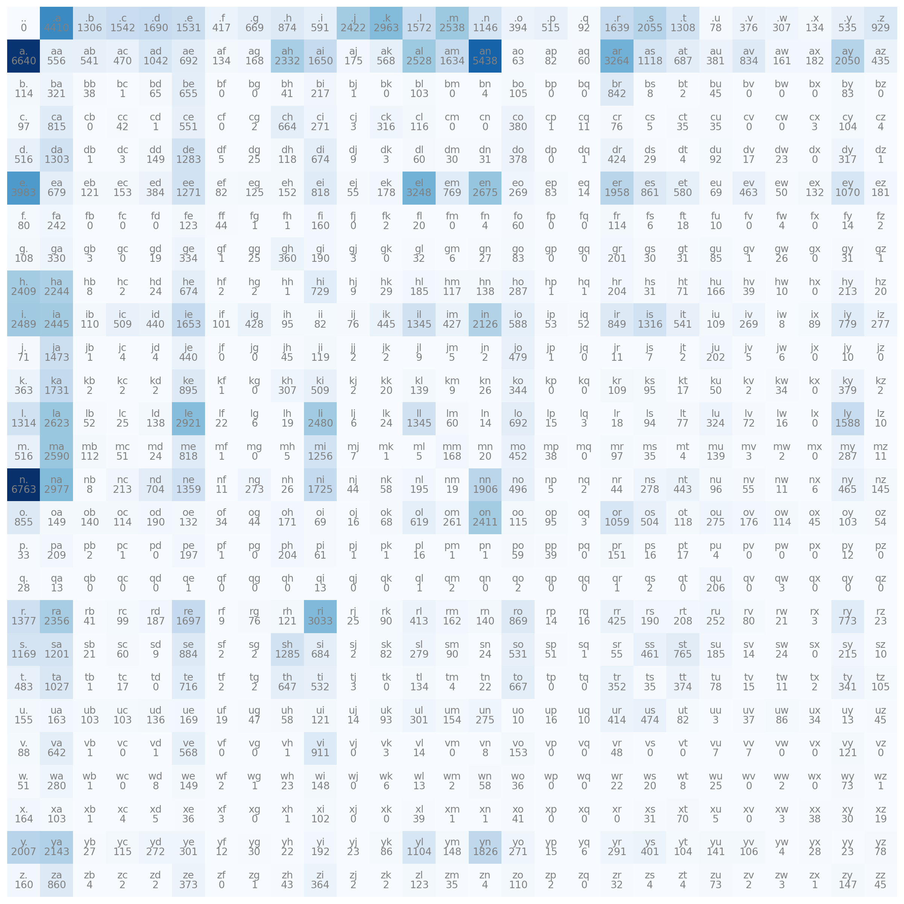
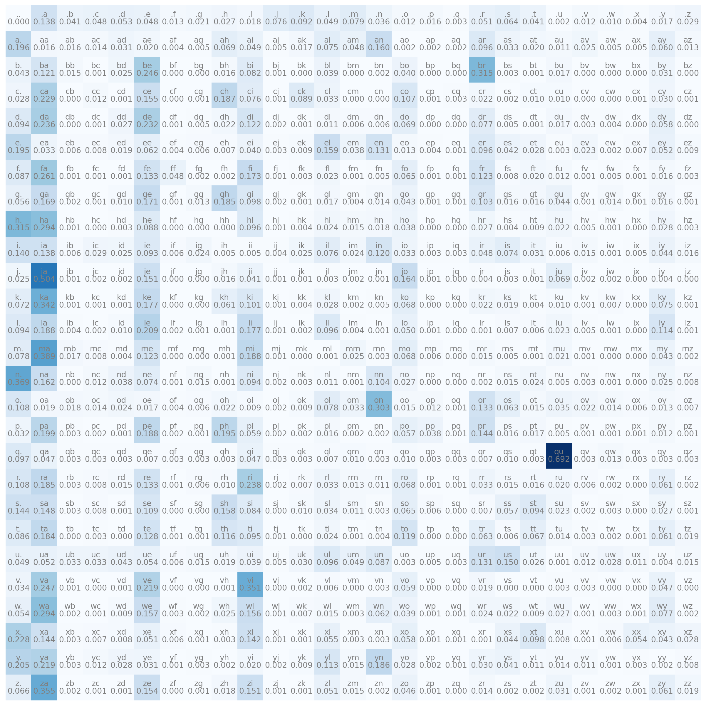

import torch
# Basically makes a list of all the names
names = open("names.txt", "r").read().splitlines()
names[:5]['emma', 'olivia', 'ava', 'isabella', 'sophia']Part 1
Luca WB
January 28, 2026
January 28, 2026
In this post, we will implement an Autoregressive Neural Network from scratch, relying solely on the PyTorch tensor class. We assume prior familiarity with Neural Networks; however, if your knowledge feels a bit rusty or you need a refresher, I recommend reading this post beforehand Building Neural Networks from Scratch.
The main reason for this is to learn how an Autoregressive NN works to generate words, for this, I’m drawing on Andrej Karpathy’s video series about makemore, a network capable of creating more words of the same type, so if you train with names, it generates more proper names it generates more words that remember proper names, and so on with anything that is formed by letters.
In this post, I will cover how to make a simple model for our baseline, and how to implement a model with MLP and compare them.
First, you need to download PyTorch and the dataset. For PyTorch, just download in the official site https://pytorch.org/get-started/locally/. Now, for the dataset, you can create your own with random names that you can think, but It’s much easier just download the names.txt dataset from the Andrej repository https://github.com/karpathy/makemore/blob/master/names.txt.
In propose of this, it’s just to create the most simple and naive model. It’s important because we need some baseline to compare with our future models, so we will create a model called bigram, the logic is just to look to the last character. Note that you will use just one character of context for our model, and we will consider that the most small part of our word is a character, for models like chatGPT, they don’t use characters, they use combinations of characters similar to syllables.
So, to start, we need first import our dataset and PyTorch
import torch
# Basically makes a list of all the names
names = open("names.txt", "r").read().splitlines()
names[:5]['emma', 'olivia', 'ava', 'isabella', 'sophia']Most part of models usually can’t handle with characters, so it’s useful to convert this letters in numbers in some way. For this, there are many possibles, but I will use just a simple dictionary to convert them. But we
chars = sorted(list(set("".join(names)))) # Creates an ordered list with all letters in our dataset
charToInt = {s:i+1 for i,s in enumerate(chars)} # Creates a dict to convert chars to int, we add one in the value, because of the bellow line
charToInt["."] = 0 # I will explain later why we need a special character
print(charToInt){'a': 1, 'b': 2, 'c': 3, 'd': 4, 'e': 5, 'f': 6, 'g': 7, 'h': 8, 'i': 9, 'j': 10, 'k': 11, 'l': 12, 'm': 13, 'n': 14, 'o': 15, 'p': 16, 'q': 17, 'r': 18, 's': 19, 't': 20, 'u': 21, 'v': 22, 'w': 23, 'x': 24, 'y': 25, 'z': 26, '.': 0}Just to get it ready, if we convert to int, so we can read it at the end, we will need an intToChar converter, so let’s get it ready
{1: 'a', 2: 'b', 3: 'c', 4: 'd', 5: 'e', 6: 'f', 7: 'g', 8: 'h', 9: 'i', 10: 'j', 11: 'k', 12: 'l', 13: 'm', 14: 'n', 15: 'o', 16: 'p', 17: 'q', 18: 'r', 19: 's', 20: 't', 21: 'u', 22: 'v', 23: 'w', 24: 'x', 25: 'y', 26: 'z', 0: '.'}Know, for our model, we need to calculate the total number that each sequence occurs, like, with we start with letter “a”, how many times occurs that “m” is the next character. And it’s for this that we need and special characters, because we always need something to start, after all, the autoregressive model logic and take the output of the model and put it in its input, so we need an initial input. In our case, we will use “.” as the symbol to start a name/words and to stop word (without a final symbol, it would generate forever). To make more clear, see the code bellow
Basically, this count how often some sequence of characters occurs, like the most common letter sequence is “n” follow by “.”, this mean, that the most commum letter to finish a name in our dataset it’s “n”. If you run with all the names, you can use the code bellow to find the most common occurrences
id1, id2 = (N == N.max()).nonzero(as_tuple=True) # Creates a boolean matrix that only it's True in the max value, than return a tuple where its true
print(intToChar[id1.item()], "-->", intToChar[id2.item()],"occurs ", N.max().item())n --> . occurs 6763So let’s see how our bigrams are distributed
import matplotlib.pyplot as plt
plt.figure(figsize= (16,16))
plt.imshow(N, cmap="Blues")
for i in range(27):
for j in range(27):
chstr = intToChar[i] + intToChar[j]
plt.text(j,i, chstr, ha="center", va="bottom", color="gray")
plt.text(j,i, N[i,j].item(), ha="center", va="top", color="gray")
plt.axis("off")
One thing very interesting you can note, it’s that have many combinations that don’t exist, like “bk” or “gc”. This makes it impossible for our model to generate a name with this combination, it is ok to leave it like this, but it would be a good practice to add 1 in all values, thus ensuring that at least there is the minimal possibility of generating a rare sequence
So, lets transform our probability matrix
import matplotlib.pyplot as plt
plt.figure(figsize= (16,16))
plt.imshow(P, cmap="Blues")
for i in range(27):
for j in range(27):
chstr = intToChar[i] + intToChar[j]
plt.text(j,i, chstr, ha="center", va="bottom", color="gray")
plt.text(j,i, f"{P[i,j].item():.3f}", ha="center", va="top", color="gray")
plt.axis("off")
Some probabilities stay in 0 because the visualization it’s limited to 3 decimal numbers. Now we already have our model, it’s just our probability matrix P, bellow I will show how to use it.
for i in range(10):
out = []
init = 0
while True:
id = torch.multinomial(P[init], num_samples=1, replacement=True).item()
if id == 0:
break
out.append(intToChar[id])
init = id
print("".join(out)) seren
ti
kegwa
shamidelyl
seazay
jome
bashuligey
swadellandeckaramauaigen
n
adelocNot good at all, but it’s correct, with you think the model it’s just saying random letters, see the code bellow, were any letter has the same probability
N = torch.ones((27,27))
P = N
P = P / P.sum()
for i in range(10):
out = []
init = 0
while True:
id = torch.multinomial(P[init], num_samples=1, replacement=True).item()
if id == 0:
break
out.append(intToChar[id])
init = id
print("".join(out)) gsogwlixwdmsfjehnpius
hoeauujelywlnlgwgubsygmanhmenfddnsnoplmlmzqrglwhxcobnbbfhqegtxbzuxhquw
jllihyagglxhczwjlaaffyvbjgrglhodtmu
jzcz
ywbqpdsvspemyipgtbydx
icpfhuxyx
prxo
ixgtidexdbbolsimavyulqhsvggstbwjjyang
qi